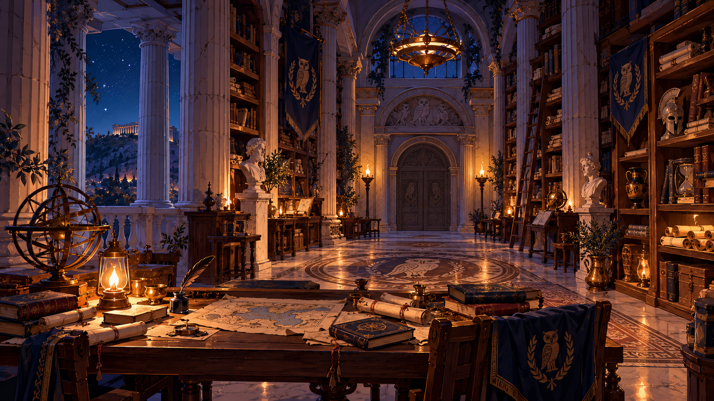

arquivo da sofiacarregando anotação…
arquivos recuperados

arquivo identificado
FILÓSOFOS
Esses primeiros filósofos gregos, apesar de suas muitas divergências, investigaram problemas relacionados à natureza, à origem, à constituição, à ordem e às transformações da realidade.
Eles não procuraram uma única resposta. Suas propostas ajudaram a inaugurar novas maneiras de investigar e argumentar sobre o mundo.
…
Gente.
Onde vocês estavam?